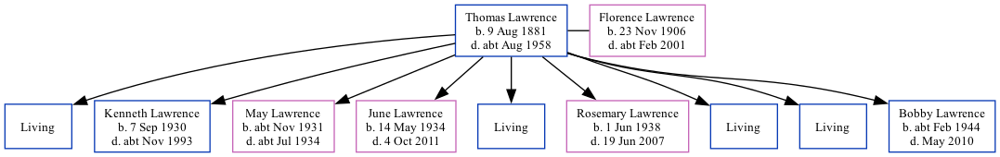

Thomas William Lawrence 1881 - c1958
[ Home ] | [ Calendar ] | [ Surnames Index ] | [ Family History ]Thomas Lawrence, the husband of Florence Eva Lawrence (the great-aunt of Nigel Horne), was born in Thanet, Kent, England on Aug 9, 18811,2 andhad 9 children, Eric Aaron Robin, Kenneth Leonard Ernest, May Winifred Lilian, June Daphne Pansy, Peter J B, Rosemary Irene Peggy, Laud W H, Christopher Winston Thomas and Bobby Andrew James. On Sep 29, 1939, he lived at The Lodge, Studdal, Kent, England1.
He died c. Aug 1958 in Thanet3.
Children
- Kenneth Leonard Ernest was born on Sep 7, 1930
- May Winifred Lilian was born c. Nov 1931
- June Daphne Pansy was born on May 14, 1934
- Rosemary Irene Peggy was born on Jun 1, 1938
- Bobby Andrew James was born c. Feb 1944
Citations
- 1939 Register - Findmypast (was the head of the household)
- England & Wales births 1837-2006 - Findmypast
- England & Wales deaths 1837-2007 - Findmypast
Media
1939 Register - TNA/R39/1822/1822J/002/10
England & Wales births 1837-2006 - BMD/B/1881/3/AZ/000332/187
England & Wales deaths 1837-2007 - BMD/D/1958/3/AZ/000540/135
Family Tree
Generated by ged2site. Last updated on Nov 13, 2024